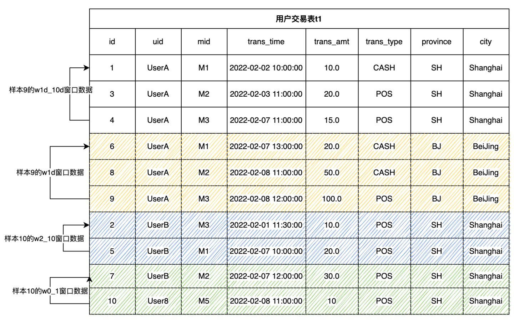

基于 SQL 的特征开发（上）
Contents
基于 SQL 的特征开发（上）#
1. 什么是机器学习的特征工程#
一个真实场景的机器学习应用一般会包含两个主体流程，即特征工程和机器学习模型（以下简称模型）。大家对模型一定很了解，平时也是接触的最多的，比如从经典的逻辑回归、决策树模型，到近几年大火的深度学习模型，都是聚焦于如何开发高质量的模型。对于特征工程，可能大家相对关注较少。但是大家一定听说过坊间传闻的一句”名言“：数据和特征决定了机器学习的上限，而模型和算法只是逼近这个上限而已。由此可见，对于特征工程的重要性大家早有共识。
一句话来定义特征工程：使用特定的领域知识，从原始数据中抽取有用的特征信息。这里强调了特定的领域知识（domain knowledge），也就是说特征抽取并不是一个标准化过程，而是基于不同的场景有不同的经验和方法论。举个简单的例子，对于实时推荐系统来说，原始数据可能只是用户实时打入的搜索关键字，如“洗衣机”，以及相应的存放于数据库中的用户和商品数据表格。那么为了更好的进行实时推荐，可以考虑如下更有意义的特征：
该用户过去一年购买最多的家电品牌
该用户过去三年在大家电类的消费上的平均消费水平
过去一小时平台上打折力度 7 折以上，符合该用户性别和年龄组的用户所购买量排名前三的洗衣机型号
通过上面的例子可以看到，特征可以做的相当复杂，并且可以具有非常高的时效性。那么如何根据特定场景，抽取好的特征，这就是数据科学家需要的修养，同时需要配备足够强大的工具，才能做好特征工程。本教程抛砖引玉，来让大家认识如何在实践中做特征工程。
2. 特征工程开发利器 – OpenMLDB#
工欲善必先利其器，在介绍特征工程算法之前，我们先有必要来认识一下特征工程的开发和部署工具。根据经验，我们粗略的把他们分类，并且总结了各自的优缺点。
开发工具 |
入门门槛 |
功能支持 |
工程化落地 |
|---|---|---|---|
Python |
低，数据科学家普遍使用 |
功能实现较为自由，通过 Python 编程，基本可以实现任何运算脚本 |
较难。Python 程序运行普遍效率较低，可以进行离线开发，但是性能一般无法满足线上实时计算的要求，另外用户需要自己解决如高可用等生产级特性。 |
通用数据库 |
中，基于 SQL 进行开发 |
没有针对特征工程做优化，某些特征的实现较为别扭，或者实现以后运行效率较低。 |
可接受。但是对于支持不太友好的特征计算函数，其功能或者性能上可能无法满足生产环境需求。 |
混合开发，比如离线使用 Python，线上使用数据库或者 C++ |
非常高，需要两组技能栈团队开发维护 |
通过开发和一定的定制化，可以满足功能需求。 |
可接受，但是成本较高。除了开发运营成本以外，还需要解决线上线下一致性问题，保证离线和在线效果一致。 |
OpenMLDB |
中，基于 SQL 进行开发 |
针对特征工程优化，基于标准 SQL 进行扩展，高效支持特征工程常用的计算方法。 |
可低成本高效落地。基于 SQL 开发，实现开发即上线，天然解决性能和线上线下一致性问题。 |
从上面的表格中总结可以看到，OpenMLDB 在功能和工程化落地方面都具有独特的优势，特别对于实时性高的时序特征计算，OpenMLDB 有不少的针对性优化。如果希望进一步了解 OpenMLDB，可以阅读相关 介绍文档，以及 OpenMLDB 的 GitHub repo 。
在本系列教程中，我们将会基于 OpenMLDB 的 SQL 语法，来实践演示如何基于 SQL 开发特征工程脚本。你可以通过阅读我们的文档 - OpenMLDB 快速上手，来了解如何试用 OpenMLDB（推荐基于 docker 镜像，通过单机版来快速试用）；你也可以在这里找到我们 完整的产品说明文档。
3. 从 0 到 1，特征工程实践#
我们将会分上下两篇介绍特征工程常用的处理方法，本篇将会侧重单表特征处理，下一篇我们将会聚焦更为复杂的多表特征计算。本文使用在金融领域普遍使用的反欺诈作为实际案例进行描述。
注意，如果你想运行本篇教程所举例的 SQL，请按照以下两个步骤做准备：
推荐使用 docker 镜像在单机版下运行本教程，镜像拉取和 CLI 运行方式参考 OpenMLDB 快速上手。如果使用集群版，请使用离线模式（
SET @@execute_mode='offline'）。集群版 CLI 下的普通线上模式仅支持简单的数据预览功能，因此无法运行教程中大部分的 SQL。本教程相关的所有数据以及导入操作脚本可以在这里下载。
3.1. 基本概念#
3.1.1. 主表和副表#
主表是特征抽取的主体数据表。直观上可以理解主表为带有模型训练所需要的标签（label）列的数据表格。在特征工程过程中，会对主表的每一行进行特征计算，最终生成对应的特征宽表。例如，下面这张用户交易表（以下代指为数据表 t1），是本文所述案例的主表。
Field |
Type |
Description |
|---|---|---|
id |
BIGINT |
样本ID,每一条样本拥有唯一ID |
uid |
STRING |
用户ID |
mid |
STRING |
商户ID |
cardno |
STRING |
卡号 |
trans_time |
TIMESTAMP |
交易时间 |
trans_amt |
DOUBLE |
交易金额 |
trans_type |
STRING |
交易类型 |
province |
STRING |
省份 |
city |
STRING |
城市 |
label |
BOOL |
样本label, true|false |
除了主表以外，数据库中可能还存在着存储相关辅助信息的数据表格，可以通过 join 操作和主表进行拼接，这些表格称为副表（注意副表可能有多张）。比如我们可以有一张副表存储着商户流水历史记录。在做特征工程过程中，把主表和副标的信息拼接起来，可以获得更为有价值的信息。关于多表的特征工程，我们将在本系列的下篇详细介绍。
3.1.2. 特征分类#
在深入讨论特征构建细节之前，我们需要对目前机器学习下常用的特征进行分类，从构建特征数据集以及聚合方式上看，机器学习常用的特征包含四种：
主表单行特征：对主表的一列或者多列进行表达式和函数加工计算。
主表窗口时序特征：对主表构建时序窗口，在窗口内进行时序特征加工。
副表单行特征：当前主表行从副表中匹配一条记录并拼接，然后对拼接后的数据行进行单行特征加工。
副表多行聚合特征：当前主表行从副表中匹配多条记录，对多条记录进行特征加工。
本文上篇将会着重介绍主表单行特征和主表窗口时序特征，稍后推出的下篇将会具体展开介绍副表单行特征以及副表多行聚合特征。
3.2. 主表单行特征#
对当前主表行的一列或者多列进行表达式和函数加工计算。主要包含以下几种方式。
列直取
主表的某些列，直接就可以作为特征参与模型训练。
SELECT uid, trans_type FROM t1;
多列加工
主表的若干列可以通过表达式或者函数加工成一个特征，如以下例子把 province 和 city 拼接到一起成为一个字符串作为一个特征。
SELECT concat(province, city) as province_city FROM t1
单行函数加工
通过系统内置函数或者 UDF 进行计算加工，如以下例子抽取了天、小时、分钟作为特征。
SELECT
day(trans_time) as f_trans_day,
hour(trans_time) as f_trans_hour,
minute(trans_time) as f_trans_minute FROM t1;
其他相关函数也包括数值特征计算（如 ceiling）、字符串特征计算（如 substr）等。
3.3. 主表窗口时序特征#
在很多场景下，更为常用的特征构建手段是基于时序窗口的特征构建，比如交易数据、用户行为等都是带有时间戳的时序数据。构造主表窗口时序特征需要完成两个步骤：
步骤一：定义时序窗口
步骤二：在时序窗口上构造特征
3.3.1. 步骤一：定义时序窗口#
我们既可以通过时间区间（如一个月），也可以通过窗口内的行数（如 100 条），去定义一个具体的时序窗口大小。时序窗口的最基本定义方式：
window window_name as (PARTITION BY partition_col ORDER BY order_col ROWS_RANGE｜ROWS BETWEEN StartFrameBound AND EndFrameBound)
其中，最基本的不可或缺的语法元素包括：
PARTITION BY partition_col: 表示窗口按照partition_col列分组ORDER BY order_col: 表示窗口按照order_col列进行排序ROWS_RANGE: 表示窗口按时间滑动；ROWS表示窗口类型是按条数滑动StartFrameBound: 表示该窗口的上界。在OpenMLDB中，一般我们可以定义窗口上界为：UNBOUNDED PRECEDING: 无上界。time_expression PRECEDING: 如果是时间窗口，可以定义时间偏移，如30d PRECEDING表示窗口上界为当前行的时间-30天。number PRECEDING: 如果是条数窗口，可以定义条数偏移。如，100 PRECEDING表示窗口上界为的当前行的前100行。
EndFrameBound: 表示该时间窗口的下界。在OpenMLDB中，一般我们可以定义窗口下界为:CURRENT ROW： 当前行time_expression PRECEDING: 一定的时间偏移，如1d PRECEDING。这表示窗口下界为当前行的时间-1天。number PRECEDING: 如果是条数窗口，可以定义条数偏移。如，1 PRECEDING表示窗口上界为的当前行的前1行。
配置窗口上下界时，请注意:
OpenMLDB 目前无法支持当前行以后的时间作为上界和下界。如
1d FOLLOWING。换言之，我们只能处理历史时间窗口。这也基本满足大部分的特征工程的应用场景。OpenMLDB 的下界时间必须>=上界时间
OpenMLDB 的下界条数必须<=上界条数
更多语法和特性可以参考 OpenMLDB窗口参考手册。

以下举例说明，对于上面所示的交易表 t1，我们定义两个时间窗口和两个条数窗口。每一个样本行的窗口都是按用户ID(uid)分组，按交易时间(trans_time)排序。注意以下窗口定义并不是完整的 SQL，稍后我们加上聚合函数以后才是完整的可运行 SQL。
w1d: 用户最近一天的窗口
-- 用户最近一天的窗口,包含当前行到最近1天以内的数据行
window w1d as (PARTITION BY uid ORDER BY trans_time ROWS_RANGE BETWEEN 1d PRECEDING AND CURRENT ROW)
样本9的 w1d 窗口包含了三行数据。分别是样本 6,8,9。这三条数据落在样本9的时间窗口内 [2022-02-07 12:00:00, 2022-02-08 12:00:00]。
w1d_10d: 用户1天以前和最近10天的窗口
-- 用户1d~10d的窗口，包含1天以前，10天以内的数据行
window w1d_10d as (PARTITION BY uid ORDER BY trans_time ROWS_RANGE BETWEEN 10d PRECEDING AND 1d PRECEDING)
样本9的w1d_10d窗口包含了三行数据。分别是样本1,3,4。这三条数据落在样本9的时间窗口内[2022-01-29 12:00:00, 2022-02-07 12:00:00]。
w0_1: 用户最近0～1行窗口
-- 用户最近1行窗口，包含前一行和当前行
window w0_1 as (PARTITION BY uid ORDER BY trans_time ROWS BETWEEN 1 PRECEDING AND CURRENT ROW)
样本10的w0_1窗口包含了2行数据。分别是样本7和样本10。
w2_10: 用户最近2～10行窗口
-- 用户最近2～10行窗口，包含前2～10行
window w2_10 as (PARTITION BY uid ORDER BY trans_time ROWS BETWEEN 10 PRECEDING AND 2 PRECEDING)
样本10的w2_10窗口包含了2行数据。分别是样本2和样本5。
3.3.2. 步骤二：多行聚合函数加工#
定义好时间窗口以后，我们可以做时间窗口内的多行聚合函数计算。
简单聚合统计
聚合函数目前支持：count(), sum(), max(), min(), avg()，示例如下。
SELECT
-- 最近30天总交易金额总额
sum(trans_amt) over w30d as w30d_sum_trans_amt,
-- 最近30天的最大交易金额
max(trans_amt) over w30d as w30d_max_trans_amt,
-- 最近30天的单次平均交易金额
avg(trans_amt) over w30d as w30d_avg_trans_amt,
-- 最近30天的总交易次数
count(trans_amt) over w30d as w30d_count_trans_amt
FROM t1
window w30d as (PARTITION BY uid ORDER BY trans_time ROWS_RANGE BETWEEN 30d PRECEDING AND CURRENT ROW);
过滤后聚合统计
先对数据集按条件过滤后，然后进行简单统计。函数形如 xxx_where:
xxx_where(col, filter_condition) over w
参数
col：参与聚合计算的列。参数
filter_condition：数据的过滤条件表达式。
目前可支持的带有 _where 类型的聚合函数为：count_where, sum_where, avg_where, max_where, min_where 。
相关示例如下：
SELECT
-- 最近30天POS交易总金额
sum_where(trans_amt, trans_type = "POS") over w30d as w30d_sum_pos_trans_amt,
-- 最近30天的最大POS交易金额
max_where(trans_amt, trans_type = "POS") over w30d as w30d_max_pos_trans_amt,
-- 最近30天的单次平均POS交易金额
avg_where(trans_amt, trans_type = "POS") over w30d as w30d_avg_pos_trans_amt,
-- 最近30天的POS交易总次数
count_where(trans_amt, trans_type = "POS") over w30d as w30d_count_pos_trans_amt
FROM t1
window w30d as (PARTITION BY uid ORDER BY trans_time ROWS_RANGE BETWEEN 30d PRECEDING AND CURRENT ROW);
分组后聚合统计
对数据集按某一列进行分组，然后分组统计，统计结果保存为形如"k1:v1,k2:v2,k3:v3"的的字符串。
函数形如 xxx_cate:
xxx_cate(col, cate) over w
参数
col：参与聚合计算的列。参数
cate：分组列。
目前支持的带有 _cate 后缀的聚合函为：count_cate, sum_cate, avg_cate, max_cate, min_cate
相关示例如下：
SELECT
-- 最近30天的各城市的总交易次数, "beijing:10,shanghai:3"
count_cate(trans_amt, city) over w30d as w30d_city_count_trans_amt,
-- 最近30天的各城市的总交易额, "beijing:100,shanghai:30"
sum_cate(trans_amt, city) over w30d as w30d_city_sum_trans_amt,
-- 最近30天的各城市的平均交易额, "beijing:10,shanghai:10"
avg_cate(trans_amt, city) over w30d as w30d_city_avg_trans_amt,
-- 最近30天的各城市的最大交易额, "beijing:30,shanghai:15"
max_cate(trans_amt, city) over w30d as w30d_city_max_trans_amt,
-- 最近30天的各城市的最小交易额, "beijing:5,shanghai:5"
min_cate(trans_amt, city) over w30d as w30d_city_max_trans_amt
FROM t1
window w30d as (PARTITION BY uid ORDER BY trans_time ROWS_RANGE BETWEEN 30d PRECEDING AND CURRENT ROW);
过滤后再分组聚合统计
先对窗口按条件过滤后, 然后对数据集按某一列进行分组，然后分组统计，统计结果保存为形如"k1:v1,k2:v2,k3:v3"的的字符串。
函数形如 xxx_cate_where:
xxx_cate_where(col, filter_condition, cate) over w
参数
col：参与聚合计算的列。参数
filter_condition：数据的过滤条件表达式参数
cate: 分组列。
目前可支持的过滤后再分组聚合统计函数为：count_cate_where, sum_cate_where, avg_cate_where, max_cate_where, min_cate_where
相关示例如下：
SELECT
-- 最近30天的各城市的POS交易次数, "beijing:5,shanghai:2"
count_cate_where(trans_amt, trans_type = "POS", city) over w30d as w30d_city_count_pos_trans_amt,
-- 最近30天的各城市的POS交易总额, "beijing:60,shanghai:25"
sum_cate_where(trans_amt, trans_type = "POS", city) over w30d as w30d_city_sum_pos_trans_amt,
-- 最近30天的各城市的POS平均交易额, "beijing:12,shanghai:12.5"
avg_cate_where(trans_amt, trans_type = "POS", city) over w30d as w30d_city_avg_pos_trans_amt,
-- 最近30天的各城市的POS最大交额额, "beijing:30,shanghai:15"
max_cate_where(trans_amt, trans_type = "POS", city) over w30d as w30d_city_count_pos_trans_amt,
-- 最近30天的各城市的POS最小交易额, "beijing:5,shanghai:10"
min_cate_where(trans_amt, trans_type = "POS", city) over w30d as w30d_city_count_pos_trans_amt
FROM t1
window w30d as (PARTITION BY uid ORDER BY trans_time ROWS_RANGE BETWEEN 30d PRECEDING AND CURRENT ROW);
按类型列进行频率统计
通常，我们对类型特征会进行频率的统计。例如，我们可能需要统计各个类别中，最高频次的类型，最高频的类型的频度占比等。
Top ratio 特征fz_top1_ratio：求窗口内某个分类count最大的count数占窗口总数据的比例。
SELECT
-- 最近30天的交易次数最大的城市的交易次数占比
fz_top1_ratio(city) over w30d as top_city_ratio
FROM t1
window w30d as (PARTITION BY uid ORDER BY trans_time ROWS_RANGE BETWEEN 30d PRECEDING AND CURRENT ROW);
Top N 特征fz_topn_frequency(col, top_n): 求取窗口内某个分类频率最高的N个分类
SELECT
-- 最近30天的交易次数最大的2个城市, "beijing,shanghai"
fz_topn_frequency(city, 2) over w30d as top_city_ratio
FROM t1
window w30d as (PARTITION BY uid ORDER BY trans_time ROWS_RANGE BETWEEN 30d PRECEDING AND CURRENT ROW);